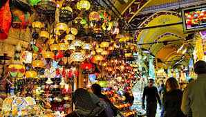

BIENVENUE A ISTANBUL
ISTANBUL
Istanbul est avec près de 15 millions d'habitants la ville la plus grande et la plus touristique de Turquie. De plus, l'ancienne capitale des empires romain, byzantin et ottoman est, malgré sa situation politique mouvementée, l'une des villes les plus visitées de la planète.
Sainte-Sophie
Sainte-Sophie n'est pas seulement l'un des endroits les plus importants à voir à Istanbul, mais aussi l'une des merveilles du monde. C'est une mosquée impressionnante dont on peut souligner.

Grand Bazar
Le Grand Bazar est l'un des marchés les plus grands et les plus anciens du monde, et l'un des meilleurs endroits pour faire du shopping et voir à Istanbul. Ce marché compte plus de 58 rues et 4 000 magasins. L'intérêt qui suscite à la fois les touristes et les Turcs fait que ce lieu reçoit entre 300 000 et 500 000 visiteurs par jour.

Pont Galata
Si vous me donniez de choisir mon endroit préféré parmi tous ceux à voir à Istanbul, je choisirais probablement le pont de Galata. Se promener dans cet endroit rempli de pêcheurs qui vendent leurs prises aux restaurants au niveau inférieur du pont et admirer les toits de la ville au coucher du soleil est une expérience unique à ne pas manquer.
Taksim Square et Rue Istiklal
Située dans la partie européenne, dans le quartier le plus moderne d'Istanbul, la place Taksim est l'un des centres névralgiques de la ville. Un lieu où se sont déroulés divers événements publics et manifestations politiques. Vous y trouverez de nombreux hôtels, boutiques, bars et restaurants, un lieu animé qui, avec Sultanahmet, est l'un des plus recommandés pour rester.